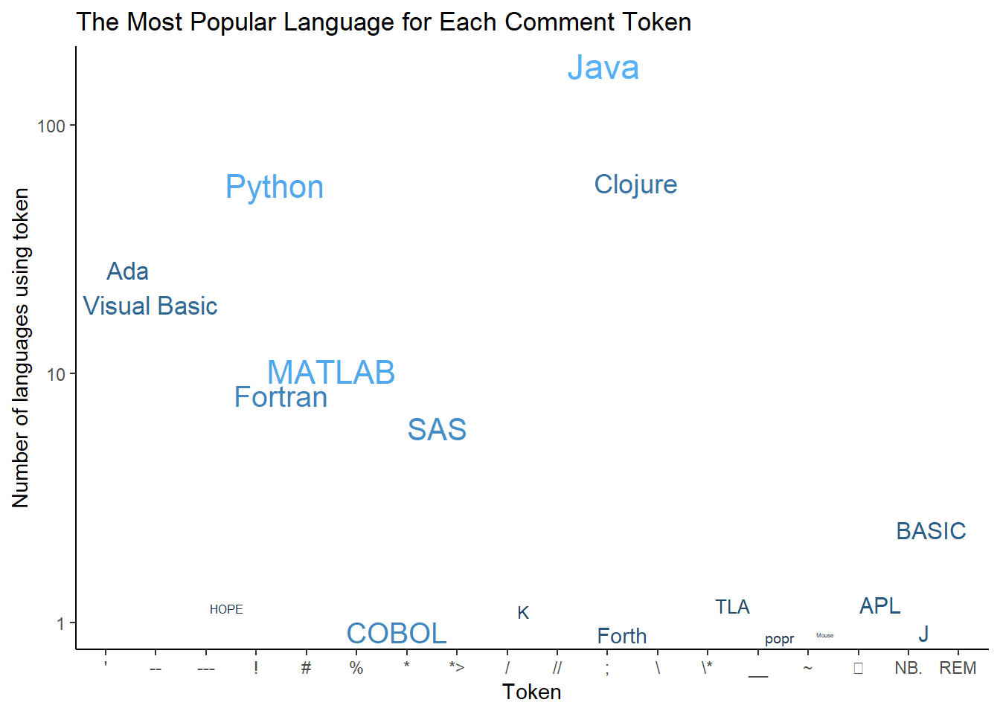
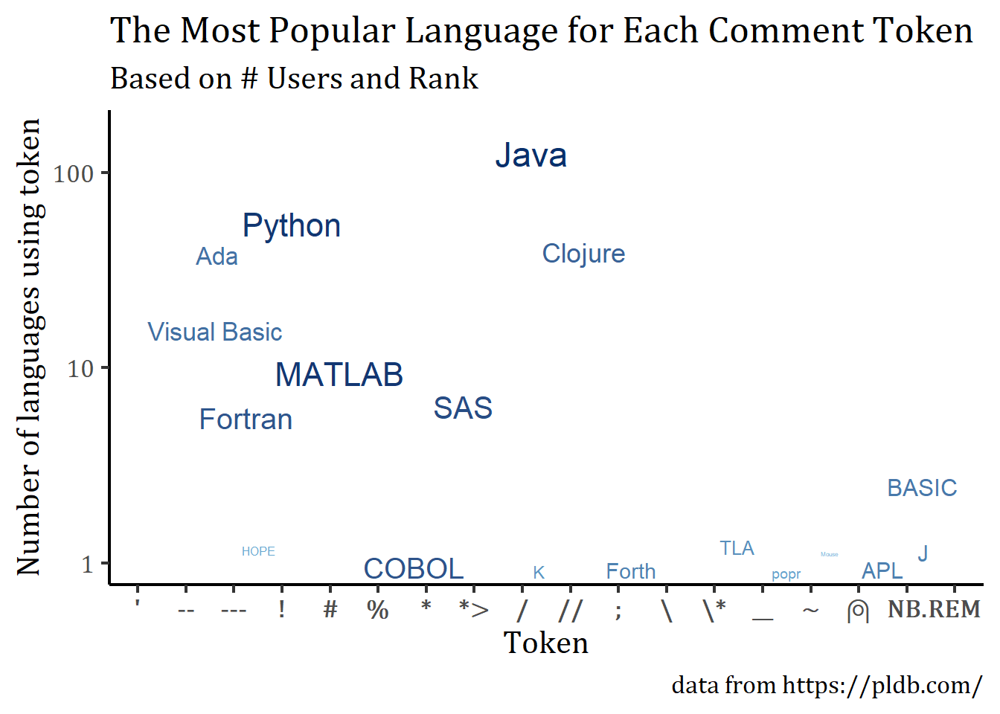

library(tidytuesdayR)
library(tidyverse)
library(skimr)
library(ggthemes)
library(gt)
library(ggrepel)
library(visdat) # visualizing missing data in dataframeTidyTuesday Week 12: Programming Languages Revisited
R
TidyTuesday
R-code
Code-Along
Data-Viz
skimr
TidyTuesday: Polishing
This week, I participated in my first #TidyTuesday challenge. My goal was to get something out on the day of the challenge rather than perfection. I did notice that the skimr output wasn’t formatted nicely on the webpage. Today, I’m going to delve into the skimr and Quarto documentation and make a nicer version of the output. Secondly, I’m going to fix up my final figure, which is the one I shared on social media:
My first try at a #TidyTuesday challenge. We were given a dataset about what characters are used to comment computer code. This viz shows the most “highly ranked” language for each type of commenting token. The size of the word reflects the # of users of that language. #RStats pic.twitter.com/oGhqaYHD5U
— Louise Sinks (@LouiseSinks) March 21, 2023
Skimr to understand your data
Skimr is a package that provides statistical summaries of the variables in your dataframe. It also provides information about the missingness of each variable.
# Get the Data
# Read in with tidytuesdayR package
# This loads the readme and all the datasets for the week of interest
# Either ISO-8601 date or year/week works!
#tuesdata <- tidytuesdayR::tt_load('2023-03-21')
tuesdata <- tidytuesdayR::tt_load(2023, week = 12)
languages <- tuesdata$languagesCustomizing the skim Output
My main objection is that the numerical summary is too wide and has a scroll bar. I especially want the histogram to be viewable on the first screen. I also don’t particularly care about all the quartile information; min and max are enough. If I want to delve more into the stats of a variable, I will do it another way, not with skimr.
First, quarto lets you expand the output of the code chunk to fill the page via the option “#| column: page”, so I’ll do that. Next, I’ll create a custom skim function that drops the p25, p50, and p75 output from the summary of the numerical variables.
my_skim <- skim_with(numeric = sfl(p25 = NULL, p50 = NULL, p75 = NULL))
my_skim(languages)| Name | languages |
| Number of rows | 4303 |
| Number of columns | 49 |
| _______________________ | |
| Column type frequency: | |
| character | 21 |
| logical | 4 |
| numeric | 24 |
| ________________________ | |
| Group variables | None |
Variable type: character
| skim_variable | n_missing | complete_rate | min | max | empty | n_unique | whitespace |
|---|---|---|---|---|---|---|---|
| pldb_id | 0 | 1.00 | 1 | 52 | 0 | 4303 | 0 |
| title | 0 | 1.00 | 1 | 56 | 0 | 4267 | 0 |
| description | 3480 | 0.19 | 4 | 2273 | 0 | 811 | 0 |
| type | 0 | 1.00 | 2 | 27 | 0 | 40 | 0 |
| creators | 3203 | 0.26 | 2 | 253 | 0 | 985 | 0 |
| website | 2928 | 0.32 | 13 | 131 | 0 | 1368 | 0 |
| domain_name | 3588 | 0.17 | 6 | 32 | 0 | 700 | 0 |
| reference | 2314 | 0.46 | 15 | 251 | 0 | 1955 | 0 |
| github_repo | 3402 | 0.21 | 25 | 73 | 0 | 897 | 0 |
| github_repo_description | 3438 | 0.20 | 4 | 419 | 0 | 853 | 0 |
| github_language | 3829 | 0.11 | 1 | 30 | 0 | 474 | 0 |
| github_language_tm_scope | 3837 | 0.11 | 4 | 34 | 0 | 361 | 0 |
| github_language_type | 3837 | 0.11 | 4 | 11 | 0 | 4 | 0 |
| github_language_ace_mode | 3838 | 0.11 | 1 | 16 | 0 | 96 | 0 |
| github_language_file_extensions | 3833 | 0.11 | 1 | 606 | 0 | 466 | 0 |
| wikipedia | 2731 | 0.37 | 32 | 104 | 0 | 1566 | 0 |
| wikipedia_summary | 2884 | 0.33 | 17 | 6741 | 0 | 1407 | 0 |
| wikipedia_related | 3145 | 0.27 | 1 | 1761 | 0 | 1059 | 0 |
| line_comment_token | 3831 | 0.11 | 1 | 7 | 0 | 23 | 0 |
| origin_community | 1190 | 0.72 | 3 | 305 | 0 | 2232 | 0 |
| file_type | 3213 | 0.25 | 2 | 6 | 0 | 4 | 0 |
Variable type: logical
| skim_variable | n_missing | complete_rate | mean | count |
|---|---|---|---|---|
| features_has_comments | 3683 | 0.14 | 1.00 | TRU: 617, FAL: 3 |
| features_has_semantic_indentation | 3722 | 0.14 | 0.11 | FAL: 516, TRU: 65 |
| features_has_line_comments | 3765 | 0.13 | 0.96 | TRU: 517, FAL: 21 |
| is_open_source | 3792 | 0.12 | 0.89 | TRU: 453, FAL: 58 |
Variable type: numeric
| skim_variable | n_missing | complete_rate | mean | sd | p0 | p100 | hist |
|---|---|---|---|---|---|---|---|
| appeared | 0 | 1.00 | 1991.11 | 111.44 | -2000 | 2023 | ▁▁▁▁▇ |
| domain_name_registered | 3801 | 0.12 | 2011.33 | 7.02 | 1990 | 2023 | ▁▃▃▇▆ |
| isbndb | 3217 | 0.25 | 7.71 | 33.16 | 0 | 400 | ▇▁▁▁▁ |
| book_count | 0 | 1.00 | 2.08 | 17.34 | 0 | 401 | ▇▁▁▁▁ |
| semantic_scholar | 3545 | 0.18 | 3.79 | 8.32 | 0 | 52 | ▇▁▁▁▁ |
| language_rank | 0 | 1.00 | 2151.00 | 1242.31 | 0 | 4302 | ▇▇▇▇▇ |
| github_repo_stars | 3414 | 0.21 | 2127.40 | 7554.02 | 0 | 88526 | ▇▁▁▁▁ |
| github_repo_forks | 3417 | 0.21 | 261.29 | 1203.00 | 0 | 23732 | ▇▁▁▁▁ |
| github_repo_updated | 3418 | 0.21 | 2021.39 | 1.76 | 2012 | 2023 | ▁▁▁▁▇ |
| github_repo_subscribers | 3418 | 0.21 | 62.34 | 200.88 | 0 | 2910 | ▇▁▁▁▁ |
| github_repo_created | 3425 | 0.20 | 2015.84 | 3.48 | 2006 | 2022 | ▁▅▇▇▇ |
| github_repo_issues | 3518 | 0.18 | 123.03 | 546.26 | 0 | 9522 | ▇▁▁▁▁ |
| github_repo_first_commit | 3567 | 0.17 | 2014.74 | 4.99 | 1987 | 2022 | ▁▁▁▆▇ |
| github_language_repos | 3833 | 0.11 | 197134.67 | 1226900.57 | 0 | 16046489 | ▇▁▁▁▁ |
| wikipedia_daily_page_views | 2837 | 0.34 | 227.13 | 783.55 | -1 | 13394 | ▇▁▁▁▁ |
| wikipedia_backlinks_count | 2877 | 0.33 | 318.55 | 1635.29 | 1 | 34348 | ▇▁▁▁▁ |
| wikipedia_page_id | 2893 | 0.33 | 9167847.21 | 13506832.90 | 928 | 63063548 | ▇▁▁▁▁ |
| wikipedia_appeared | 2958 | 0.31 | 1991.14 | 17.03 | 1830 | 2019 | ▁▁▁▃▇ |
| wikipedia_created | 3040 | 0.29 | 2005.75 | 3.77 | 2001 | 2020 | ▇▇▂▁▁ |
| wikipedia_revision_count | 3130 | 0.27 | 330.43 | 813.26 | 1 | 10104 | ▇▁▁▁▁ |
| last_activity | 0 | 1.00 | 2000.62 | 84.60 | -900 | 2023 | ▁▁▁▁▇ |
| number_of_users | 0 | 1.00 | 13771.26 | 227712.95 | 0 | 7179119 | ▇▁▁▁▁ |
| number_of_jobs | 0 | 1.00 | 422.18 | 12572.99 | 0 | 771996 | ▇▁▁▁▁ |
| central_package_repository_count | 1482 | 0.66 | 0.00 | 0.00 | 0 | 0 | ▁▁▇▁▁ |
This output is much nicer. It is a bit wall of text though. I wouldn’t recommend using this in reports, but it is a useful tool when doing your initial dataset analysis. (As a side note, I have noticed skimr doesn’t work well on Kaggle. It performs as expected if you are in interactive mode, but it fails when you try to save the notebook or run non-interactively.)
Styling skim output with gt
If, for some reason, you did need to include output/ visualizations about missingness in a report, I’d probably recreate visualizations or tables by class of variable, especially if you have many variables, as I do here.
Here’s an example for numeric variables, of which there are 24 in the dataset. First, we will skim the data and then use the gt package to style the resulting dataframe as a table. I used a built-in style, but each table element can be individually customized.
languages_numeric <- languages %>%
select_if(is.numeric)
lang_numeric_skim <- my_skim(languages_numeric)
lang_numeric_skim %>%
select(-skim_type) %>%
gt() %>%
cols_label(n_missing = "# Missing", complete_rate = "Completeness",
numeric.mean = "Mean", numeric.sd = "Standard Deviation",
numeric.p0 = "Min", numeric.p100 = "Max",
numeric.hist = "Histogram") %>%
opt_stylize(style = 6, color = "blue", add_row_striping = TRUE) %>%
tab_header(title = "Summary of Numerical Variables in Languages") | Summary of Numerical Variables in Languages | |||||||
| skim_variable | # Missing | Completeness | Mean | Standard Deviation | Min | Max | Histogram |
|---|---|---|---|---|---|---|---|
| appeared | 0 | 1.0000000 | 1.991105e+03 | 1.114434e+02 | -2000 | 2023 | ▁▁▁▁▇ |
| domain_name_registered | 3801 | 0.1166628 | 2.011333e+03 | 7.021132e+00 | 1990 | 2023 | ▁▃▃▇▆ |
| isbndb | 3217 | 0.2523821 | 7.706262e+00 | 3.316421e+01 | 0 | 400 | ▇▁▁▁▁ |
| book_count | 0 | 1.0000000 | 2.079479e+00 | 1.734465e+01 | 0 | 401 | ▇▁▁▁▁ |
| semantic_scholar | 3545 | 0.1761562 | 3.794195e+00 | 8.316231e+00 | 0 | 52 | ▇▁▁▁▁ |
| language_rank | 0 | 1.0000000 | 2.151000e+03 | 1.242313e+03 | 0 | 4302 | ▇▇▇▇▇ |
| github_repo_stars | 3414 | 0.2066000 | 2.127403e+03 | 7.554016e+03 | 0 | 88526 | ▇▁▁▁▁ |
| github_repo_forks | 3417 | 0.2059029 | 2.612867e+02 | 1.203003e+03 | 0 | 23732 | ▇▁▁▁▁ |
| github_repo_updated | 3418 | 0.2056705 | 2.021390e+03 | 1.763285e+00 | 2012 | 2023 | ▁▁▁▁▇ |
| github_repo_subscribers | 3418 | 0.2056705 | 6.234237e+01 | 2.008820e+02 | 0 | 2910 | ▇▁▁▁▁ |
| github_repo_created | 3425 | 0.2040437 | 2.015843e+03 | 3.479589e+00 | 2006 | 2022 | ▁▅▇▇▇ |
| github_repo_issues | 3518 | 0.1824309 | 1.230344e+02 | 5.462553e+02 | 0 | 9522 | ▇▁▁▁▁ |
| github_repo_first_commit | 3567 | 0.1710435 | 2.014739e+03 | 4.985409e+00 | 1987 | 2022 | ▁▁▁▆▇ |
| github_language_repos | 3833 | 0.1092261 | 1.971347e+05 | 1.226901e+06 | 0 | 16046489 | ▇▁▁▁▁ |
| wikipedia_daily_page_views | 2837 | 0.3406925 | 2.271330e+02 | 7.835524e+02 | -1 | 13394 | ▇▁▁▁▁ |
| wikipedia_backlinks_count | 2877 | 0.3313967 | 3.185484e+02 | 1.635289e+03 | 1 | 34348 | ▇▁▁▁▁ |
| wikipedia_page_id | 2893 | 0.3276784 | 9.167847e+06 | 1.350683e+07 | 928 | 63063548 | ▇▁▁▁▁ |
| wikipedia_appeared | 2958 | 0.3125726 | 1.991144e+03 | 1.702650e+01 | 1830 | 2019 | ▁▁▁▃▇ |
| wikipedia_created | 3040 | 0.2935162 | 2.005748e+03 | 3.768240e+00 | 2001 | 2020 | ▇▇▂▁▁ |
| wikipedia_revision_count | 3130 | 0.2726005 | 3.304314e+02 | 8.132556e+02 | 1 | 10104 | ▇▁▁▁▁ |
| last_activity | 0 | 1.0000000 | 2.000616e+03 | 8.459776e+01 | -900 | 2023 | ▁▁▁▁▇ |
| number_of_users | 0 | 1.0000000 | 1.377126e+04 | 2.277129e+05 | 0 | 7179119 | ▇▁▁▁▁ |
| number_of_jobs | 0 | 1.0000000 | 4.221838e+02 | 1.257299e+04 | 0 | 771996 | ▇▁▁▁▁ |
| central_package_repository_count | 1482 | 0.6555891 | 0.000000e+00 | 0.000000e+00 | 0 | 0 | ▁▁▇▁▁ |
Visualizing Missingness with visdat
The visdat package makes ggplot- compatible missingness plots. The cluster = TRUE option groups variables that share missingness. Here we see that usually if some of the GitHub data is missing, then all of the GitHub data is missing. The percent missing is listed for each variable, and the overall missingness of the dataset is shown in the legend.
Note vis_miss doesn’t work on very large datasets. The documentation suggests keeping the number of records below 1,000. A more extensive package for exploratory visualizations called naniar could also be used.
languages_numeric %>%
vis_miss(cluster = TRUE) +
ggtitle("Missing Data in the Languages Dataset") +
#theme_classic() +
theme(axis.text.x = element_text(size = 8, angle = 90))Improving “The Most Popular Language for Each Comment Token” Figure
joined <- read_csv("processed_lang.csv" , show_col_types = FALSE)Now the original figure:
joined %>%
ggplot(aes(line_comment_token, n, size = log(number_of_users),
color = log(number_of_users), label = title)) +
# geom_point() +
scale_y_log10() +
geom_text_repel(show.legend = FALSE) +
ggtitle("The Most Popular Language for Each Comment Token") +
xlab("Token") +
ylab("Number of languages using token") +
theme_classic()
I thought I had noted this in the previous post, but one of the tokens, ⍝ , is rendered as an empty box in the ggplot figures. I thought fixing this would be easy. First, I thought I could just pass the Unicode value for that symbol. Then, when that didn’t work, I thought I could change the font to one supporting that symbol. Supposedly, changing the font should be easy, yet after 3 hours working on it, I still had blank squares. There is a nice tutorial on changing fonts in ggplot that did not work until I found someone with the same issue. The solution is to add a line of code that doesn’t make much sense to me : windowsFonts("Cambria Math" = windowsFont("Cambria Math"))
I saw a nice TidyTuesday figure on Twitter:
My submission for #TidyTuesday, Week 12 on programming languages. I explore jobs per users.
Code: https://t.co/bV9DUHZmro pic.twitter.com/2D5YLnE5yz— Mitsuo Shiota (@mitsuoxv) March 21, 2023
with a caption referencing the original dataset. I’d like to add that. I generally want to increase the figure’s legibility and flip the color scale so that darker blue corresponds to more users. I also don’t think what popular means is entirely clear, so I’d like to explain more fully what I’m graphing.
windowsFonts("Cambria Math" = windowsFont("Cambria Math"))
joined %>%
ggplot(aes(line_comment_token, n, size = log(number_of_users),
color = log(number_of_users), label = title)) +
scale_y_log10() +
geom_text_repel(show.legend = FALSE) +
scale_colour_gradient(high = "#08306b", low = "#6baed6") +
labs(title = "The Most Popular Language for Each Comment Token",
subtitle = "Based on # Users and Rank",
caption = "data from https://pldb.com/") +
xlab("Token") +
ylab("Number of languages using token") +
theme_classic(base_size = 16) +
theme(text = element_text( family = "Cambria Math")) +
theme(axis.text.x = element_text(face = "bold")) 
Citation
BibTeX citation:
@online{e. sinks2023,
author = {E. Sinks, Louise},
title = {TidyTuesday {Week} 12: {Programming} {Languages} {Revisited}},
date = {2023-03-24},
url = {https://lsinks.github.io/posts/2023-03-24-tidytuesday-figure-polishing/},
langid = {en}
}
For attribution, please cite this work as:
E. Sinks, Louise. 2023. “TidyTuesday Week 12: Programming
Languages Revisited.” March 24, 2023. https://lsinks.github.io/posts/2023-03-24-tidytuesday-figure-polishing/.